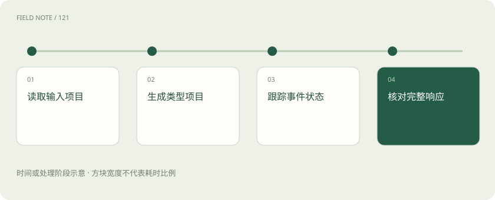
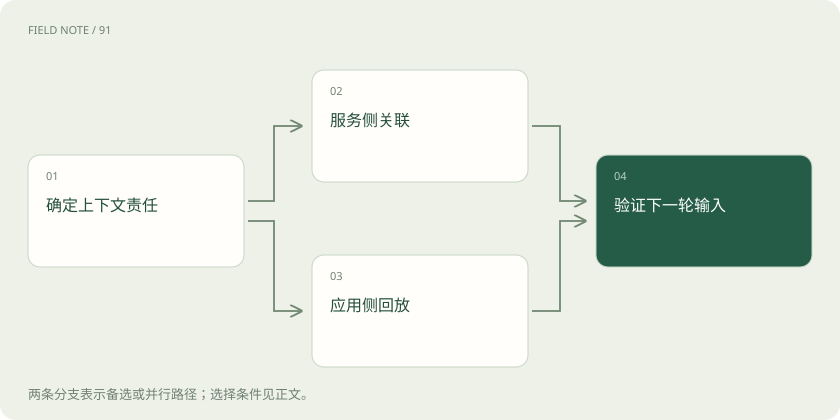
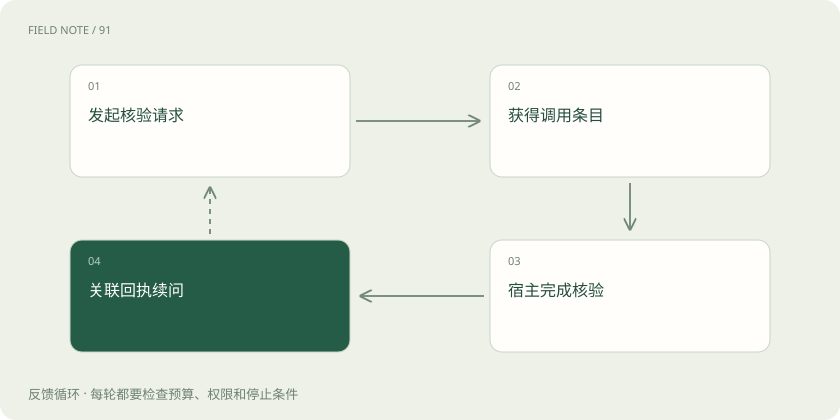

先读哪些知识
先用一个类比理解
类比只帮助建立直觉，不等同于技术的完整机制。
一图看懂

Responses 把一次响应组织成内容项
Responses 的入口是 /v1/responses，其核心不是把 Chat Completions 改一个名字。input 接收输入，output 是带类型的内容项数组，内容项可以表达消息、推理相关内容或函数调用。理解内容项模型后，才能看懂一轮生成为什么既出现调用又出现文本，以及为什么不能照搬 choices 的读取方式。
以费用报销助手为例，它先读取发票信息，再请求核验预算，最后说明结果。这些步骤具有不同语义，不应被压成一条回答字符串。内容项类型帮助应用区分展示内容与流程动作，但并不替应用确定报销是否合规。接口成功返回只表明获得响应对象，业务判定仍需依据证据、规则及核验结果。
输入、指令与内容部分共同决定语境
input 可以是便捷文本，也可以是结构化输入内容项。instructions 用于提供本轮指导，用户材料则应通过对应的消息与内容类型进入。便捷输入减少了简单问答的表达成本，却不会消除角色、内容类型和上下文选择的责任；任务越复杂，越要确认输入实际包括哪些文件、要求和工具回执。
报销助手拿到一张发票，不意味着已获得全部审批规则。若本轮要求“仅核验，不提交”，运行环境必须把这一限制保留为有效指令，并确保提交工具受到权限控制。发票上的备注是待分析数据，不能覆盖应用规则。多模态输入还需要核对模型支持范围和相应内容结构，不能把文件地址存在数据库中当成模型已经读取。
output 应按类型读取而不是固定位置取值
output 数组中的每个内容项都有自己的类型，message 也只是其中一种。消息内部还包含内容部分，可能有输出文本，也可能涉及拒绝等不同表达。把第一个内容项当成最终文本，会在推理内容项或函数调用先出现时读错内容；把所有字段拼接，则可能把本不应展示的流程材料暴露给用户。
官方 SDK 的 output_text 是汇集文本的便捷 helper，理解它时应区分 SDK 访问便利与原始 REST 对象约定。需要完整业务流程的系统，应遍历 typed items 并保留内容项间关系。报销界面可以只展示解释文本，但审计记录还需要知道预算核验是否发生、对应哪次调用，文本展示不能取代内容项级流程状态。
图解：状态携带选择

function_call_output 依 call_id 对应调用
函数调用内容项表达模型建议使用的函数及参数，宿主收到后负责校验与执行。返回结果时使用 function_call_output 输入内容项，并以 call_id 对应原来的函数调用。内容项自身的 id、响应 id 与 call_id 承担不同身份作用，把它们混用会破坏对应关系，尤其是在同一轮出现多个工具调用的时候。
预算核验和发票查重可能同时返回，应用不能靠结果到达顺序猜测属于谁。每个回执都应携带正确调用关联，并诚实表达成功、失败或未知。函数 strict 约束的是参数结构；目前 Responses 在省略 strict 时会尝试严格模式，不兼容时可能回退，并可从解析后的工具配置核对结果。不能把默认行为概括成所有请求都保证严格，更不能把严格结构等同于业务授权。
状态链路与长期记忆是不同层次
多轮可以选择 previous_response_id 串联前次响应，也可以自行回放需要的输入输出内容项，或使用 Conversations 管理会话对象。这些方式回答的是后续请求如何获得上下文，不能直接等同于跨用户长期记忆。应先决定会话隔离、保留、裁剪和删除规则，再选择状态携带方式，避免把服务侧状态当作唯一业务档案。
串联 previous_response_id 时，前次顶层 instructions 不会自动继承，因此稳定规则需要在新请求重新提供。链路也不意味着历史上下文自动免费，相关输入仍可能计量。对于需要自行携带状态的流程，应保留必要的 typed items，而不是只复制可见文本；否则工具关系或模型需要的上下文可能在下一轮丢失。
typed SSE 同时表达增量与生命周期
Responses 的流使用带类型的 SSE 事件。response.output_text.delta 表示文本增量，函数参数有对应的增量和结束事件，内容项还有独立的添加与完成过程。接收方应按事件类型判断用途，并通过内容项标识和索引把片段归入正确对象，不能把所有事件的内容都当作可见文字。
报销核验中，参数还在生成时可以显示“准备核验”，但不能声称预算系统已经通过。某段文本结束只意味着该内容部分结束，不代表整个响应完成。解析时还要区分网络读取、SSE 帧和业务事件；连接可以将一个事件拆成多个读取片段，也可以一次交付多个事件。事件的语义边界比网络块的大小更重要。
完成、不完整与失败需要不同结案
response.completed、response.incomplete 与 response.failed 表达不同生命周期结果。完成事件说明响应生成已完成，不完整需要检查对应原因，失败需要读取错误信息；它们都不能用“已经收到若干文字”来替代。部分输出在异常之前可能已经被界面显示，系统需要标明这些内容尚未形成完整结论。
如果预算查询已执行而后续说明失败，重试生成不应不加区分地重新提交报销。应用应把模型响应状态与外部业务动作状态分别记录，重试前先查询已有执行记录。生成完成也可能仅表示模型提出了工具调用，接下来仍要回填结果继续流程。验收时应同时看响应生命周期、工具调用闭环和业务确认，三者不能压成一个布尔成功值。
图解：核验迭代过程

迁移要同时校准对象、事件与状态
从 Chat Completions 迁移时，先选择一个边界明确的流程，分别检查输入消息如何映射为 input 内容项、输出如何从 choices 转为 typed output、工具结果如何关联，以及流式消费者如何处理类型事件。结构化输出配置位置等字段也有差异，不能只替换端点就宣布完成。Chat Completions 仍受支持，可以按业务流逐步验证迁移。
报销助手的对照样本应覆盖普通解释、多工具核验、拒绝、生成中断和状态续接。对比时除了答案质量，还要查看调用是否重复、限制是否每轮生效、计量是否完整以及存储设置是否符合要求。显式设置 store 并不自动完成所有数据治理；人工维护的用户档案也不应依赖单条响应链。本文采用虚构报销案例帮助理解协议，没有发送真实请求。
放在一起对比
| 观察对象 | 承担职责 | 不能推出的结论 |
|---|---|---|
| output item | 表达特定类型结果 | 每项都有可展示文本 |
| call_id | 关联函数调用回执 | 等同响应标识 |
| previous_response_id | 串联响应上下文 | 继承顶层指令 |
| completed | 响应生成完成 | 所有业务动作已成功 |
放进真实场景
报销助手将预算核验结果按 call_id 回填，重新提供本轮限制，再继续生成核验结论。
别踩这个误区
想一想
为什么关联 previous_response_id 后仍需提供稳定 instructions？
该关联用于携带响应上下文，不会继承前次顶层 instructions；规则需要本轮重新明确。
关联阅读
资料与边界
本文为原创知识讲解。类比和图示经过简化；示例数字不代表实测或报价。整理日期：2026-11-05。文末列出对应技术的原始资料，具体功能与版本支持请以原文为准。